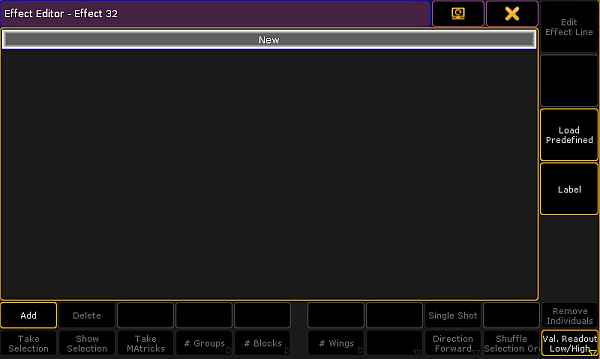
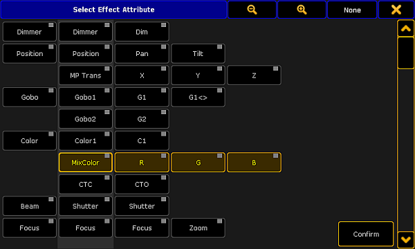
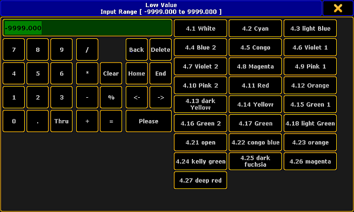
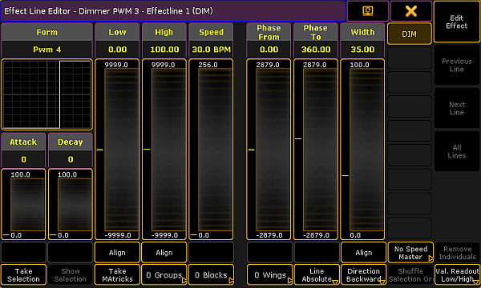

Create an Effect that Uses Presets
There are three methods to create an effects that uses presets.
It is possible to create such an effect in the:
Effect Editor
Create a new effect first:
- Press Edit and tap an empty cell in the effect pool.
- An empty effect editor opens.

Empty effect editor
- To select the attribute of an effect, tap Add in the lower left corner of the editor.
- The pop-up Select Effect Attribute opens.

Pop-up select effect attribute
- Select the attribute and tap Confirm.
- The attribute is now in the editor.
- If you would like to use a preset for the low value, press Edit and tap or tap and hold the cell below the column Low Value.
- The calculator opens displaying the presets for the value.

Calculator – effect presets of low value
- To apply a preset, tap one displayed on the right of the calculator.
- The preset for the effect is now applied.
- To use the preset for the high value as well, proceed the same as described in steps 7 to 9. Make sure to tap the corresponding cell.
Effect Line Editor
Create an effect that uses presets in the effect line editor:
- Tap Edit Effect Line in the effect editor.
- The effect line editor opens.

Pop-up – effect line editor
- Toggle the button Align to Preset. To do so, tap Align two times.
- Tap inside the fader Low or High.
- The calculator displaying presets opens.
- To apply a preset, tap one on the right of the calculator.
The preset for the effect is now applied.
Programmer
Important:
Unlike in and editor, when creating an effect in the programmer there is no calculator.
Create an effect that uses presets in the programmer:
- Open the programmer. For more information see What is the programmer.
- Select fixtures.
- Tap Effect Layers and then tap for example the effect layer Low.
- Then, tap a preset in the preset pool.
The preset is instantly applied and executed.